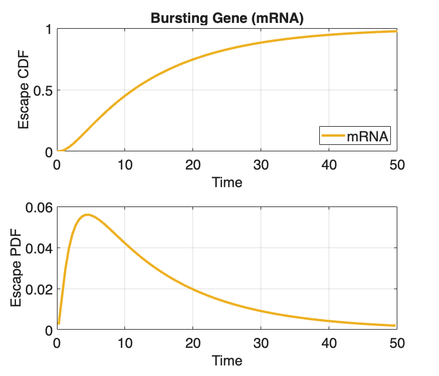
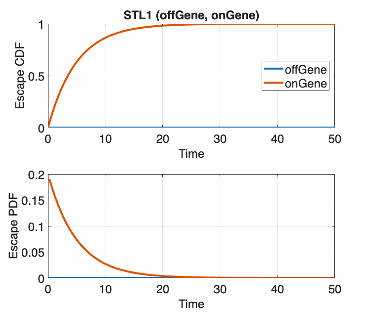
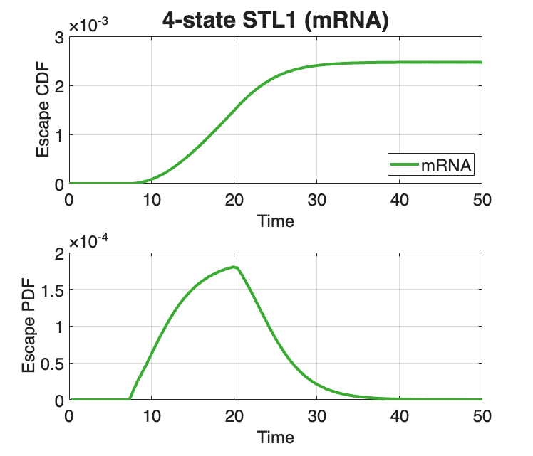

Contents
- SSIT/Examples/example_5_SolveSSITModels_EscapeTimes
- Section 2.2: Finding and visualizing master equation solutions
- Preliminaries
- Ex(1): Solve escape times for the bursting gene example model
- Model:
- Specify a boundary for the escape calculation
- Ex(2): Solve escape times for the time-varying STL1 yeast model
- STL1:
- Ex(3): Solve escape times for the 4-state time-varying STL1 yeast model
- 4-state STL1:
SSIT/Examples/example_5_SolveSSITModels_EscapeTimes
%%%%%%%%%%%%%%%%%%%%%%%%%%%%%%%%%%%%%%%%%%%%%%%%%%%%%%%%%%%%%%%%%%%%%%%%%%%
Section 2.2: Finding and visualizing master equation solutions
* Solve a first-passage time problem (escape times)
%%%%%%%%%%%%%%%%%%%%%%%%%%%%%%%%%%%%%%%%%%%%%%%%%%%%%%%%%%%%%%%%%%%%%%%%%%%
Preliminaries
Use the models from example_1_CreateSSITModels clear close all
% example_1_CreateSSITModels % Load the models created in example_1_CreateSSITModels % load('example_1_CreateSSITModels.mat') % View model summaries: Model.summarizeModel STL1.summarizeModel STL1_4state.summarizeModel % Set the times at which distributions will be computed: Model.tSpan = linspace(0,50,101); STL1.tSpan = linspace(0,50,101); STL1_4state.tSpan = linspace(0,50,101); %%%%%%%%%%%%%%%%%%%%%%%%%%%%%%%%%%%%%%%%%%%%%%%%%%%%%%%%%%%%%%%%%%%%%%%%%%%
Species:
offGene; IC = 1; discrete stochastic
onGene; IC = 0; discrete stochastic
mRNA; IC = 0; discrete stochastic
Reactions:
Reaction 1:
s1: 1*offGene --> 1*onGene
w1: kon * offGene
Reaction 2:
s2: 1*onGene --> 1*offGene
w2: koff * onGene
Reaction 3:
s3: NULL --> 1*mRNA
w3: kr * onGene
Reaction 4:
s4: 1*mRNA --> NULL
w4: dr * mRNA
Model Parameters:
{'kon' } {[0.2000]}
{'koff'} {[0.2000]}
{'kr' } {[ 10]}
{'dr' } {[ 5]}
Species:
offGene; IC = 1; discrete stochastic
onGene; IC = 0; discrete stochastic
mRNA; IC = 0; discrete stochastic
Reactions:
Reaction 1:
s1: 1*offGene --> 1*onGene
w1: kon * offGene
Reaction 2:
s2: 1*onGene --> 1*offGene
w2: onGene*koff/(1+Hog1)
Reaction 3:
s3: NULL --> 1*mRNA
w3: kr * onGene
Reaction 4:
s4: 1*mRNA --> NULL
w4: dr * mRNA
Input Signals:
Hog1(t) = (a0+a1*exp(-r1*t)*(1-exp(-r2*t))*(t>0))
Model Parameters:
{'kon' } {[0.2000]}
{'koff'} {[0.2000]}
{'kr' } {[ 10]}
{'dr' } {[ 5]}
{'a0' } {[ 5]}
{'a1' } {[ 10]}
{'r1' } {[0.0040]}
{'r2' } {[0.0100]}
Species:
g1; IC = 1; discrete stochastic
g2; IC = 0; discrete stochastic
g3; IC = 0; discrete stochastic
g4; IC = 0; discrete stochastic
mRNA; IC = 0; discrete stochastic
Reactions:
Reaction 1:
s1: 1*g1 --> 1*g2
w1: k12*g1
Reaction 2:
s2: 1*g2 --> 1*g1
w2: (max(0,k21o*(1-k21i*Hog1)))*g2
Reaction 3:
s3: 1*g2 --> 1*g3
w3: k23*g2
Reaction 4:
s4: 1*g3 --> 1*g2
w4: k32*g3
Reaction 5:
s5: 1*g3 --> 1*g4
w5: k34*g3
Reaction 6:
s6: 1*g4 --> 1*g3
w6: k43*g4
Reaction 7:
s7: NULL --> 1*mRNA
w7: kr1*g1
Reaction 8:
s8: NULL --> 1*mRNA
w8: kr2*g2
Reaction 9:
s9: NULL --> 1*mRNA
w9: kr3*g3
Reaction 10:
s10: NULL --> 1*mRNA
w10: kr4*g4
Reaction 11:
s11: 1*mRNA --> NULL
w11: dr*mRNA
Input Signals:
Hog1(t) = A*(((1-(exp(1)^(-r1*(t-t0))))*exp(1)^(-r2*(t-t0)))/(1+((1-(exp(1)^(-r1*(t-t0))))*exp(1)^(-r2*(t-t0)))/M))^n*(t>t0)
Model Parameters:
{'t0' } {[ 3.1700]}
{'k12' } {[ 78]}
{'k21o'} {[ 192000]}
{'k21i'} {[ 3200]}
{'k23' } {[ 0.4020]}
{'k34' } {[ 7.8000]}
{'k32' } {[ 1.6200]}
{'k43' } {[ 2.2800]}
{'dr' } {[ 0.2940]}
{'kr1' } {[ 0.0468]}
{'kr2' } {[ 0.7200]}
{'kr3' } {[ 59.4000]}
{'kr4' } {[ 3.2400]}
{'r1' } {[ 0.0041]}
{'r2' } {[ 0.4260]}
{'A' } {[9.3000e+09]}
{'M' } {[6.4000e-04]}
{'n' } {[ 3.1000]}
Ex(1): Solve escape times for the bursting gene example model
from example_1_CreateSSITModels
%%%%%%%%%%%%%%%%%%%%%%%%%%%%%%%%%%%%%%%%%%%%%%%%%%%%%%%%%%%%%%%%%%%%%%%%%%%
Model:
Create a copy of the bursting gene model:
Model_escape = Model;
Specify a boundary for the escape calculation
Calculate the time until the mRNA concentration reaches 5
Model_escape.fspOptions.escapeSinks.f = {'mRNA'};
Model_escape.fspOptions.verbose = false;
Model_escape.fspOptions.escapeSinks.b = 5;
Model_escape = Model_escape.formPropensitiesGeneral('Model_escape');
[~,~,Model_escape] = Model_escape.solve;
% Plot the CDF and PDF
Model_escape.plotFSP(Model_escape.Solutions, [], "escapeTimes", [],...
[], {'linewidth',3}, Title="Bursting Gene (mRNA)",...
Colors=[0.93,0.69,0.13], LegendLocation="southeast");
%%%%%%%%%%%%%%%%%%%%%%%%%%%%%%%%%%%%%%%%%%%%%%%%%%%%%%%%%%%%%%%%%%%%%%%%%%%
 Ex(2): Solve escape times for the time-varying STL1 yeast model
from example_1_CreateSSITModels
%%%%%%%%%%%%%%%%%%%%%%%%%%%%%%%%%%%%%%%%%%%%%%%%%%%%%%%%%%%%%%%%%%%%%%%%%%%
STL1:
Create a copy of the time-varying STL1 yeast model:
STL1_escape = STL1;
% Solve for the escape time:
STL1_escape.fspOptions.escapeSinks.f = {'offGene','onGene'};
STL1_escape.fspOptions.escapeSinks.b = [0.5;0.5];
STL1_escape = STL1_escape.formPropensitiesGeneral('STL1_escape');
[~,~,STL1_escape] = STL1_escape.solve;
% Plot the CDF and PDF
STL1_escape.plotFSP(STL1_escape.Solutions,[],"escapeTimes",[],[],...
{'linewidth',3}, Title="STL1 (offGene, onGene)",...
LegendLocation="east");
%%%%%%%%%%%%%%%%%%%%%%%%%%%%%%%%%%%%%%%%%%%%%%%%%%%%%%%%%%%%%%%%%%%%%%%%%%%
 Ex(3): Solve escape times for the 4-state time-varying STL1 yeast model
from example_1_CreateSSITModels
%%%%%%%%%%%%%%%%%%%%%%%%%%%%%%%%%%%%%%%%%%%%%%%%%%%%%%%%%%%%%%%%%%%%%%%%%%%
4-state STL1:
Create a copy of the time-varying STL1 yeast model:
STL1_4state_escape = STL1_4state;
% This should not be required, since propensities are already
% generated.
STL1_4state_escape = ...
STL1_4state_escape.formPropensitiesGeneral('STL1_4state_escape');
% Set the initial populations:
STL1_4state_escape.initialCondition = [1;0;0;0;0];
% Set the times at which distributions will be computed:
STL1_4state_escape.tSpan = linspace(0,100,200);
% Solve for time for mRNA to reach 100:
STL1_4state_escape.fspOptions.escapeSinks.f = {'mRNA'};
STL1_4state_escape.fspOptions.escapeSinks.b = 100;
[~,~,STL1_4state_escape] = STL1_4state_escape.solve;
% Plot the CDF and PDF
STL1_4state_escape.plotFSP(STL1_4state_escape.Solutions, [],...
"escapeTimes", [], [], {'linewidth',3}, XLim=[0,50],...
TitleFontSize=24, Title="4-state STL1 (mRNA)",...
Colors=[0.23,0.67,0.2], LegendLocation="southeast");
